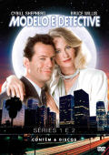

|

"Moonlighting" (1985/86 - 1140m)
SINOPSE
Homicídios...
Raptos...
Pessoas desaparecidas.
Os Vencedores do Globo de Ouro® Cybill Shepherd e Bruce Willis dão-lhe as boas-vindas entre ininterruptas e espirituosas discusões, à Agência de Detectives Blue Moon, onde o perigo é a profissão. Com aparições especiais de Orson Welles, Eva Marie Saint, Whoopi Goldberg e Tim Robbins, esta colecção em DVD inclui as duas primeiras séries completas, num total de 24 episodios, numa excêntrica combinação de comédia e mistério que fizeram de MODELO E DETECTIVE uma das mais inovadoras séries na história da televisão.
Episódios:
SÉRIE 1
01. Episódio Piloto
02. O Duelo
03. Lei a Mente, Veja o Filme
04. A Próxima Morte Será Ouvida
05. Próxima Paragem - Homicídio
06. O Assassino está no Correio
SÉRIE 2
07. Irmão, Podes Emprestar-me uma Loira?
08. A Mulher da Máscara de Ferro
09. O Dinheiro Fala - Maddie Ganha
10. A Sequência dos Sonhos Toca Sempre
Duas Vezes
11. Meu Lindo David
12. Ficar a Conhecê-la
13. Algures Debaixo do Arco-Íris
14. Retrato de Maddie
15. Atlas Expelido
16. Este Foi o Episódio Antes do Natal
17. A Noiva de Tupperman
18. Intriga Internacional de Dipesto
19. O Hábito Não Faz o Monge
20. Para Todo o Pai a Sua Filha é Virgem
21. Testemunha da Execução
22. Um Homem Sonâmbulo
23. Funeral Para um Homem Morto
24. Camille
CRIADO POR
Glenn Gordon Caron
INTÉRPRETES
Cybill Shepherd, Bruce Willis, Allyce Beasley, Curtis Armstrong.
|
VIDEO
Standard 1.33:1 [4:3]
AUDIO
Inglês Mono
Espanhol Mono
Italiano Mono
LEGENDAS
Português
Inglês
Espanhol
Dinamarquês
Holandês
Finalndês
Norueguês
Sueco
OPÇÕES ESPECIAIS
O MATERIAL BONUS INCLUI TRÊS DOCUMENTÁRIOS!
- A História de Modelo e Detective Parte 1:
Um olhar profundo ao trabalho criativo da Série 1, com entrevistas exclusivas aos criadores, actores e equipa técnica.
- Dentro da Agência de Detectives Blue Moon - A História de Modelo e Detective Parte 2:
A Parte 2 aprofunda a Série 2. Conheça as incríveis histórias por detrás da criação dos Episódios 6-23, incluindo aquela de como conseguiram que Orson Welles gravasse uma introdução à serie que foi para o ar poucos dias antes da sua morte; a apresentação de convidados especiais, tais como Whoopi Golgberg; e o sucesso alcançado pela série.
- O Fenómeno Modelo e Detective:
Um olhar à forma como a série passou de um pequeno sucesso para um fenómeno cultural mundial entre os fãs, são só quando transmitida, mas tamém depois de acabar.
DISCOS/LADOS
6 disco de 1 lado
ESTÚDIO(S)
ABC Circle Films
Picturemaker Productions
Sony Pictures Entertainment
DISTRIBUIÇÃO
Sony Pictures, Lda.
|